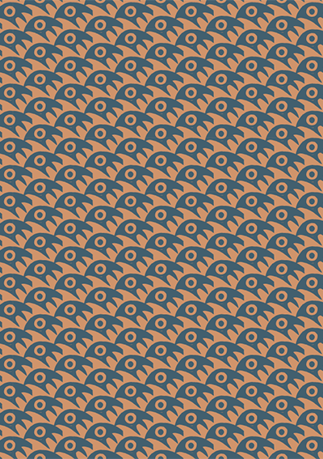
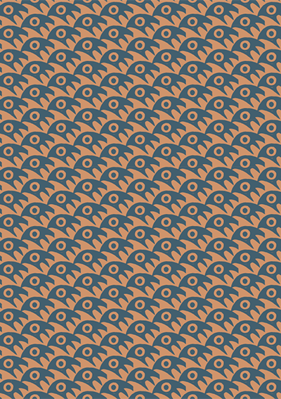

Cosimo Veneziano
Appunti
In this project I designed the book layout of "Cosimo Veneziano, Appunti" containing three articles. The focus of the articles' content varied which I encountered in my design including layout, colours, illustrations, and typography. Text and article images were provided.
 
